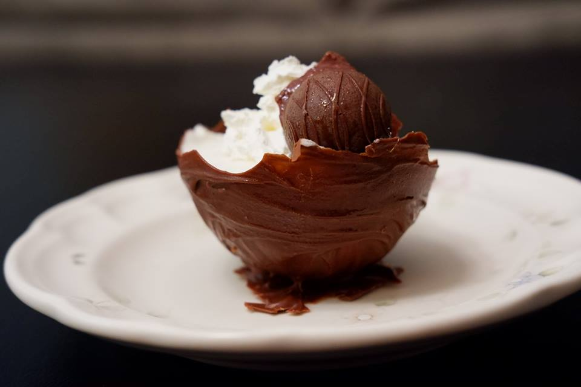
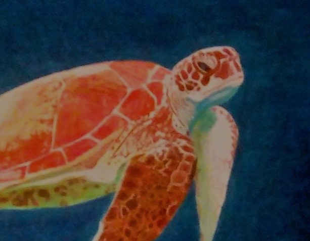
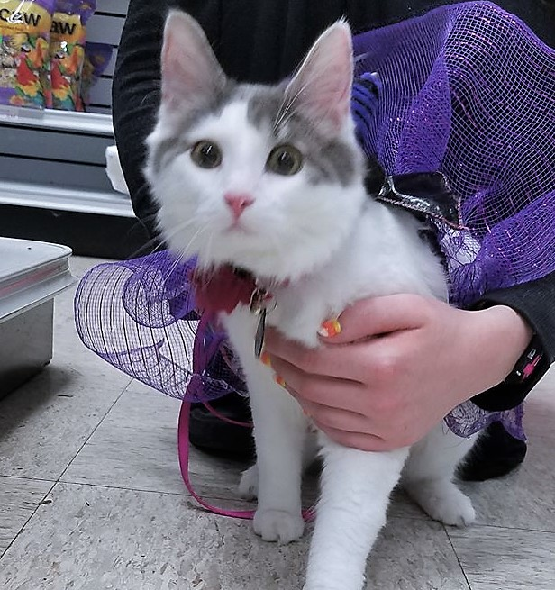

BS in Computer Science & AA in Web Design and Development
Anticipated Spirng 2020 | Lewis-Clark State College
Grants
Higher Education Research Council undergraduate research award 2017
Higher Education Research Council undergraduate research award 2018
INBRE Summer 2018 Undergraduate Fellowship Grant
Poster Presentations
“CASTER - Computer Assisted Segmentation Tool Environment Revisited”
2018 ICUR Conference
2018 INBRE Conference
2019 ICUR Conference (Summer 2019)
Skills and Languages
Python
Processing
Java
C++
HTML
SCSS
PHP
JavaScript
SQL
C
C#
Relevant Courses
Precalculus
Calculus 1
Discrete Mathematics
Databases and Knowledge Managment
Linux and Tools
Foundations/Programming
Human Relations and Organizations
SQL: Structure Query Language
Introduction to Bioinformatics
Capstone Design
Operating Systems
Software Engineering
Awards
President’s List: Fall 2016, Spring 2017
Dean’s List: Fall 2017, Spring 2018, Fall 2018
Job Experience
Research Assistant | LCSC | March 2016 - Current
Sandwich Artist | Subway | June 2015 – August 2015

Challenges
I made this dessert because I found heavy whipping cream in the fridge that needed to be used up. I wanted to see what I could do, and eventually ending up with this as my end product. It is a chocolate bowl filled with three layers: chocolate moouse, raspberry moouse, and marshmallow moouse, and topped with a swirl of whipped cream and a raspberry cream chocolate.

My Drawings
I drew the turtle in the upper left hand corner based on a photo from Altru Vistas Cuba Oceanic Society. I see turtles as a symbol of freedom, so I really like them. They are beautiful and elegant, and I feel honored to represent them in drawings. This particular drawing took about six months to complete, and I used colored pencils as my medium.

My Kitten
In around June of 2018, a litter of kittens showed up in my backyard. I took most of them to the animal shelter, but I feel in love with this one. I named her Sophia, and we are very close. She provides me with a time-based routeen, which really helps me. I'm training her to follow simple commands, and she is already leash trained. If I am home, she is never far from me.